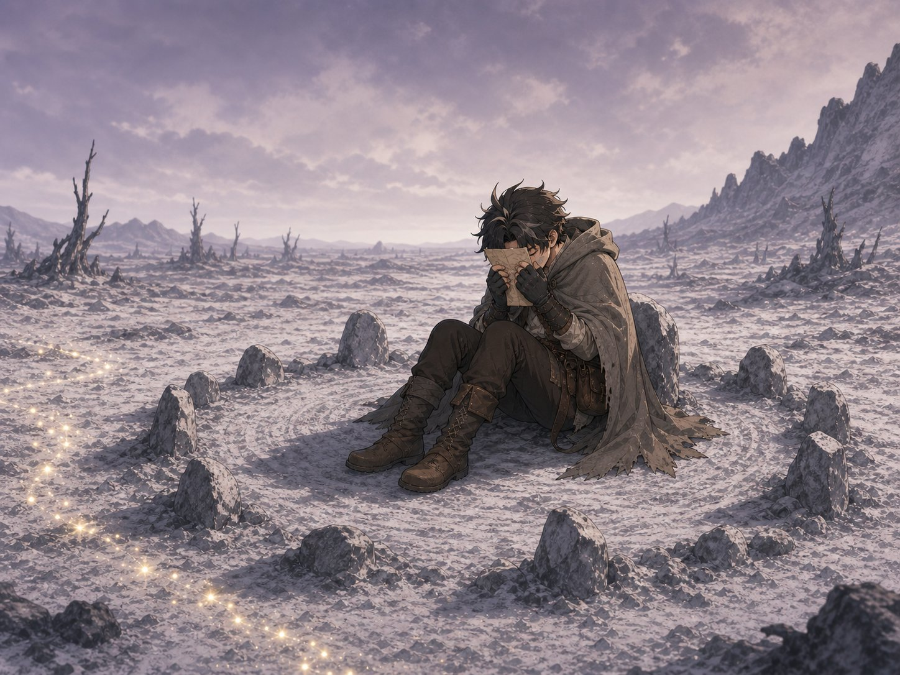
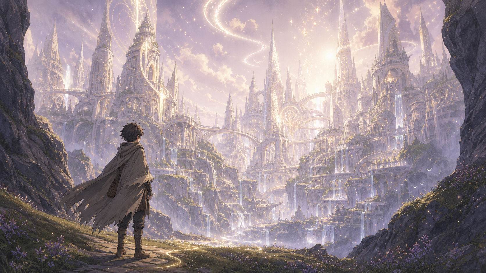
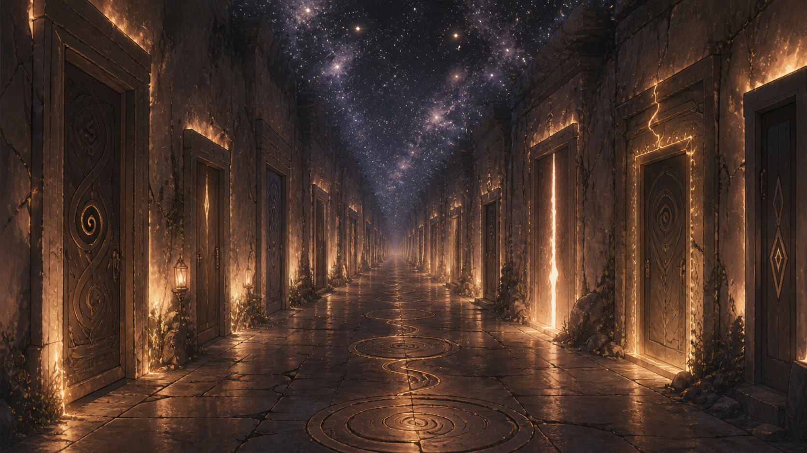
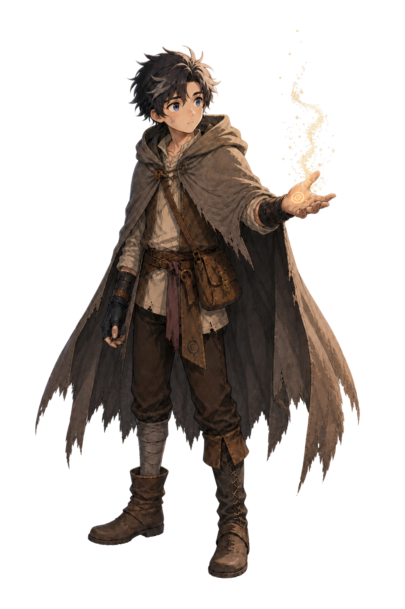
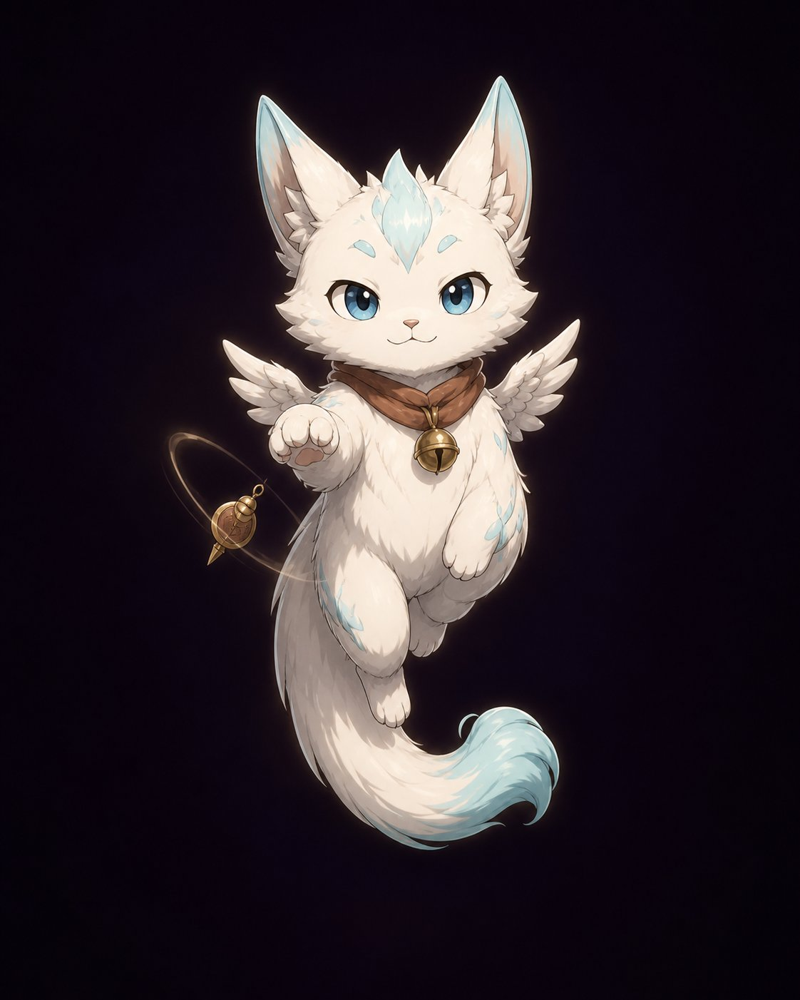

The world forgot itself. One man is walking forward into what remains.
The world of Lirien has forgotten itself. The shimmer — that living atmospheric light, the texture of a world that knows it is whole — is gone from most places. Twelve anchor points once held the world in resonance. Five are still alive. Seven are dark.
He does not know his name. He does not know what he did. The hollow beneath his ribs knows something his mind doesn't. The world is waiting to see if he'll ask the right question.

I don't want to be alone.

The city that refused to forget quietly.
Each tone is a frequency — the particular way a person's deepest self resonates with reality. Compatible tones produce harmonics. The world responds not to what you intend, but to what you actually are.
You cannot wield a tone. You can only allow it.

"You've been here before.— Thistle
You just don't remember it yet."

He erased himself for one final chance. He does not remember who he was. The glyph on his palm does.

They arrived with opinions about everything and show no particular interest in gravity as a personal constraint. Something about them suggests they have been here before. In what sense, they decline to specify.
An interactive narrative. Every choice is small. Every choice is load-bearing. The ending finds you by the accumulated weight of who you chose to be.
A man destroys the world by trying to save it alone.
He must learn to let others carry what he cannot.
It begins in ash.
or sit with the small room of music
If the world found you —
we'd like to know.